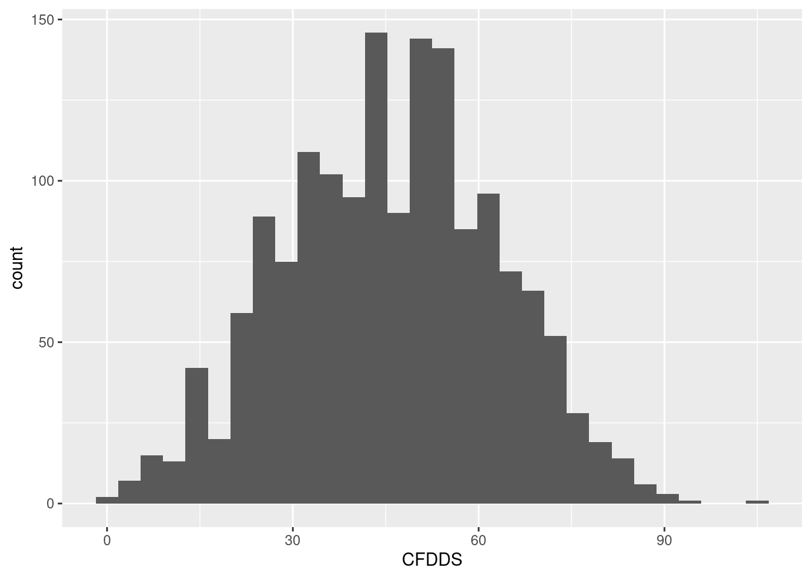
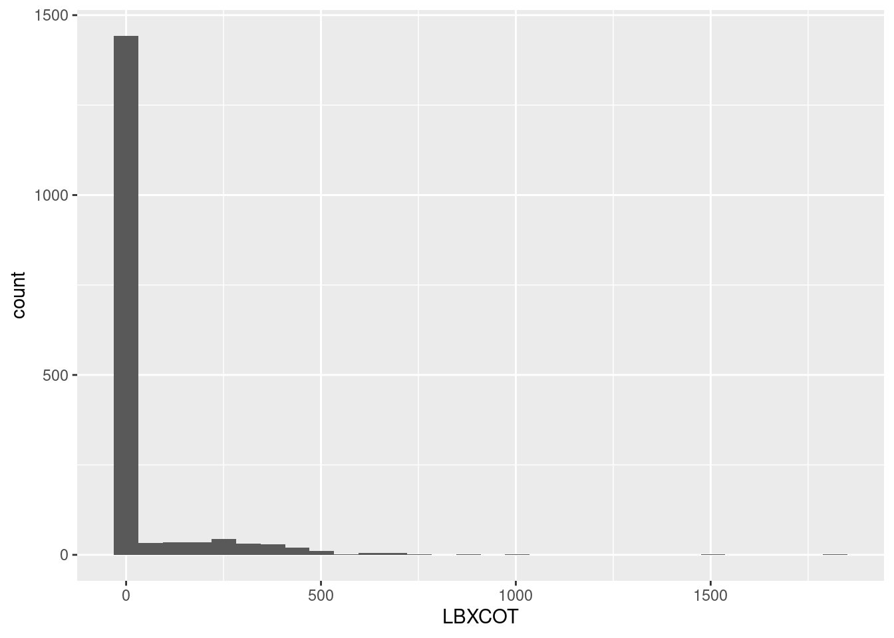
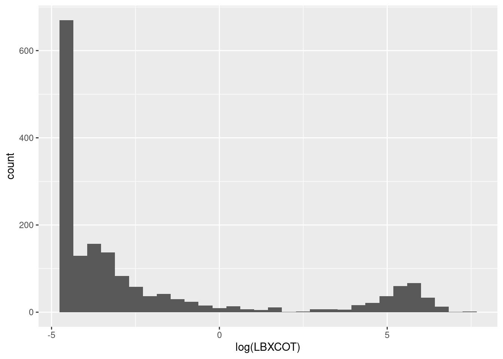
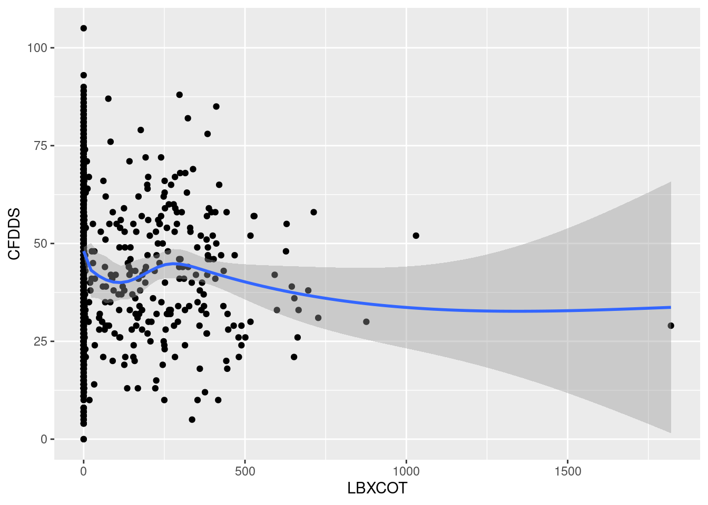
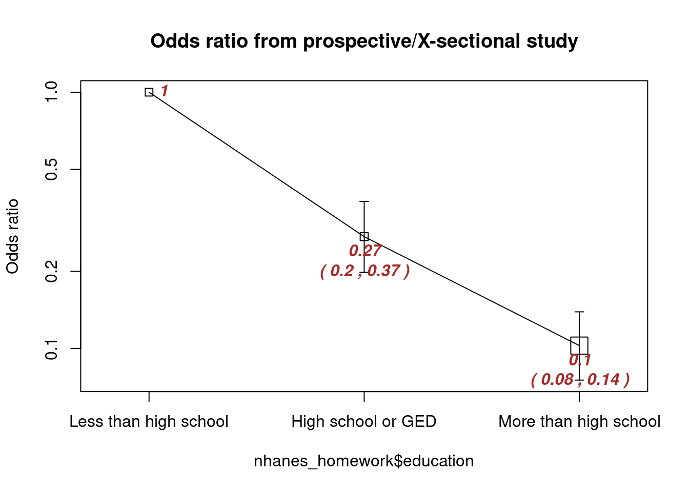

# Load packages for this assignment, do this every time
library(here)
library(ggcorrplot)
library(gtsummary)
library(epiDisplay)
library(tidyverse)EPID 674: Data Management in R
Homework 5 Answer Key
Load packages
Load data
# Load saved NHANES homework dataset from the project files. This is the dataset we built in homework 2
load(here(("nhanes_homework_dataset.rda")), verbose = TRUE)Loading objects:
nhanes_homework1. Test association between age group and cognition score
Test the association between age group (variable: age_group) and digit symbol substitution test score (variable: CFDDS).
# Independent variable: age_groups
# Check frequency in each category
table(nhanes_homework$age_groups)
[60,65] (65,70] (70,75] (75,80]
617 398 319 507 # Dependent variable: CFDDS
# Check to see if normally distributed
ggplot(nhanes_homework,
aes(x = CFDDS)) +
geom_histogram()Don't know how to automatically pick scale for object of type labelled/integer. Defaulting to continuous.`stat_bin()` using `bins = 30`. Pick better value with `binwidth`.Warning: Removed 249 rows containing non-finite values (stat_bin).
# Yes, reasonably normally distributed, can proceed with parametric test
# What do you expect to observe in the ANOVA?
nhanes_homework %>%
group_by(age_groups) %>%
summarise(mean_cog = mean(CFDDS, na.rm = TRUE)) %>%
ungroup()# A tibble: 4 × 2
age_groups mean_cog
<fct> <dbl>
1 [60,65] 51.6
2 (65,70] 46.4
3 (70,75] 43.7
4 (75,80] 39.3# Expect to see higher cognitive scores in the younger age groups
# ANOVA test
anova(aov(nhanes_homework$CFDDS ~ nhanes_homework$age_groups))Analysis of Variance Table
Response: nhanes_homework$CFDDS
Df Sum Sq Mean Sq F value Pr(>F)
nhanes_homework$age_groups 3 36624 12207.9 44.485 < 2.2e-16 ***
Residuals 1588 435792 274.4
---
Signif. codes: 0 '***' 0.001 '**' 0.01 '*' 0.05 '.' 0.1 ' ' 1# Observed an association, can follow up with pairwise t-tests
pairwise.t.test(nhanes_homework$CFDDS, nhanes_homework$age_groups, p.adjust.method = "bonferroni")
Pairwise comparisons using t tests with pooled SD
data: nhanes_homework$CFDDS and nhanes_homework$age_groups
[60,65] (65,70] (70,75]
(65,70] 1.8e-05 - -
(70,75] 6.8e-10 0.2622 -
(75,80] < 2e-16 2.5e-08 0.0036
P value adjustment method: bonferroni Interpret the findings: Given that the digit symbol substitution test outcome variable was a numeric variable with a normal distribution, and the age group exposure variable had 3 or more categories, we performed an ANOVA test. With the ANOVA test, we observed a p-value less than 2.2x10-16, thus we reject the null hypothesis and determine that there is an association between at least one age group and the digit symbol substitution test.
Optional: We followed up with pairwise t-testing (using Bonferroni to account for multiple comparisons) and determined that there are differences in digit symbol substitution test score between all age groups tested, except for when comparing the greater than ages 65-70 group to the ages 70-75 group.
2. Test association between sex and cognition score
Test the association between sex group (variable: sex) and digit symbol substitution test score (variable: CFDDS).
# Independent variable: sex
# Check frequency in each category
table(nhanes_homework$sex)
Male Female
874 967 # Dependent variable: CFDDS
# Already checked in problem 1 and saw was normally distributed
# Can proceed with a parametric test
# What do you expect to observe in the t-test?
nhanes_homework %>%
group_by(sex) %>%
summarise(mean_cog = mean(CFDDS, na.rm = TRUE)) %>%
ungroup()# A tibble: 2 × 2
sex mean_cog
<fct> <dbl>
1 Male 43.6
2 Female 48.1# Expect to see female group with higher cognitive score than the male group in this sample
# T-test
t.test(nhanes_homework$CFDDS ~ nhanes_homework$sex)
Welch Two Sample t-test
data: nhanes_homework$CFDDS by nhanes_homework$sex
t = -5.3552, df = 1590, p-value = 9.798e-08
alternative hypothesis: true difference in means between group Male and group Female is not equal to 0
95 percent confidence interval:
-6.247733 -2.897926
sample estimates:
mean in group Male mean in group Female
43.56693 48.13976 Interpret the findings: Given that the digit symbol substitution test outcome variable was a numeric variable with a normal distribution, and the sex group exposure variable had 2 categories, we performed a t-test. With the t-test, we observed a p-value of 9x10-8, thus we reject the null hypothesis and determine that there is an association between sex group and the digit symbol substitution test. Females had an average of 4.6 points higher score on the digit symbol subsitution test (95% confidence interval: 2.9, 6.2) than males, thus we reject the null hypothesis.
3. Test association between serum cotinine levels and cognition score
Test the association between serum cotinine (variable: LBXCOT) and digit symbol substitution test score (variable: CFDDS).
# Independent variable: LBXCOT
# Check to see if normally distributed
ggplot(nhanes_homework,
aes(x = LBXCOT)) +
geom_histogram()`stat_bin()` using `bins = 30`. Pick better value with `binwidth`.Warning: Removed 140 rows containing non-finite values (stat_bin).
# Highly right skewed
# Log transform and check to see if normally distributed
ggplot(nhanes_homework,
aes(x = log(LBXCOT))) +
geom_histogram()`stat_bin()` using `bins = 30`. Pick better value with `binwidth`.Warning: Removed 140 rows containing non-finite values (stat_bin).
# Bimodal distribution, plan to run a non-parametric test
# Dependent variable: CFDDS
# Already checked in problem 1 and saw was normally distributed
# What do you expect to observe in the spearman correlation?
ggplot(nhanes_homework,
aes(x = LBXCOT,
y = CFDDS)) +
geom_point() +
geom_smooth()Don't know how to automatically pick scale for object of type labelled/integer. Defaulting to continuous.`geom_smooth()` using method = 'gam' and formula 'y ~ s(x, bs = "cs")'Warning: Removed 309 rows containing non-finite values (stat_smooth).Warning: Removed 309 rows containing missing values (geom_point).
# Expect to see higher cognitive scores in the lower cotinine exposure levels
# Spearman correlation test
cor.test(nhanes_homework$LBXCOT, nhanes_homework$CFDDS, method = "spearman")Warning in cor.test.default(nhanes_homework$LBXCOT, nhanes_homework$CFDDS, :
Cannot compute exact p-value with ties
Spearman's rank correlation rho
data: nhanes_homework$LBXCOT and nhanes_homework$CFDDS
S = 714029591, p-value = 4.058e-14
alternative hypothesis: true rho is not equal to 0
sample estimates:
rho
-0.1914926 Interpret the findings: Given that the digit symbol substitution test outcome variable was a numeric variable with a normal distribution, and the serum cotinine exposure variable did not have a normal distribution, we performed a non-parametric spearman correlation test. With the correlation test, we observed a p-value of 4x10-14, thus we reject the null hypothesis. We observed the correlation coefficient, rho, was equal to -0.19, indicating that higher levels of cotinine were associated with lower scores on the digit symbol substitution test.
4. Test association between educational attainment and mild cognitive impairment status
Test the association between educational attainment (variable: education) and mild cognitive impairment status (variable: MCI).
# Independent variable: education
# Check frequency in each category
table(nhanes_homework$education)
Less than high school High school or GED More than high school
491 440 907 # Dependent variable: cognitive status: MCI
# Check to see if normally distributed
table(nhanes_homework$MCI)
No Impairment Mild Cognitive Impairment
1189 403 # Proceed with a parametric test
# What relationship do we expect to observe?
nhanes_homework %>%
dplyr::select(MCI,
education) %>%
tbl_summary(by = MCI, #stratify by sex
digits = list(all_categorical() ~ c(0, 1)),
missing_text = "Missing (n)"
) 249 observations missing `MCI` have been removed. To include these observations, use `forcats::fct_explicit_na()` on `MCI` column before passing to `tbl_summary()`.| Characteristic | No Impairment, N = 1,1891 | Mild Cognitive Impairment, N = 4031 |
|---|---|---|
| education | ||
| Less than high school | 165 (13.9%) | 208 (51.7%) |
| High school or GED | 288 (24.2%) | 99 (24.6%) |
| More than high school | 736 (61.9%) | 95 (23.6%) |
| Missing (n) | 0 | 1 |
| 1 n (%) | ||
# Expect to see a higher proportion of cognitive impairment cases in the lowest educational attainment group
# Chi-squared test
chisq.test(x = nhanes_homework$education, y = nhanes_homework$MCI)
Pearson's Chi-squared test
data: nhanes_homework$education and nhanes_homework$MCI
X-squared = 267.98, df = 2, p-value < 2.2e-16# Or perform an odds ratio test
cc(outcome = nhanes_homework$MCI, exposure = nhanes_homework$education)
nhanes_homework$education
nhanes_homework$MCI Less than high school High school or GED
No Impairment 165 288
Mild Cognitive Impairment 208 99
Odds ratio 1 0.27
lower 95% CI 0.2
upper 95% CI 0.37
nhanes_homework$education
nhanes_homework$MCI More than high school
No Impairment 736
Mild Cognitive Impairment 95
Odds ratio 0.1
lower 95% CI 0.08
upper 95% CI 0.14
Chi-squared = 267.976 , 2 d.f., P value = 0
Fisher's exact test (2-sided) P value = 0 
Interpret the findings: Given that the cognitive status outcome variable was a categorical variable with 2 levels, and the educational attainment exposure variable had 3 categories, and our expected values in each cell of the table was greater than 5, we performed a chi-squared test. With the chi-square test, we observed a p-value of less than 2x10-16, thus we reject the null hypothesis. As an alternative approach, we observed that the odds of mild cognitive impairment among those in the high school education category was 0.27 (95% confidence interval: 0.2, 0.37) times lower than among those in the less than high school education category. We also observed that the odds of mild cognitive impairment among those in the greater than high school education category was 0.1 (95% confidence interval: 0.08, 0.14) times lower than among thos in the less than high school education category.